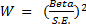
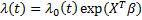
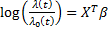

Cox Regression
The Cox regression command fits the Cox proportional-hazards regression model for survival-time data on one or more predictors. Cox regression is the most popular method of survival analysis and it is widely used in the medical and social sciences for analysis of time-to-event data, such as clinical trials, length of hospital job or residence changes and so forth.
How To
Run: Statistics→Survival Analysis→ Cox Regression...
Select Independent variables (also referred to as covariates or predictors).
Select Survival Time variable with the time-to-event data: time to death, time to relapse, time on therapy or endpoint of subject’s participation in the study.
Select Status indicator variable with event or censor codes. By default, the code for the fully observed cases is 1 and the code for the right-censored cases is 0. Use the Code for censored and Code for failure (complete cases) fields in the advanced options to override the status codes. For more complex coding scheme (indicator using a range or list of values) run the Data→Recode (v7.2+) command to transcode your data.
Casewise deletion is used for missing values removal.
Assumptions
All assumptions of the proportional hazard model must have been met – observations should be independent and the hazard ratio should be constant. It is recommended that a sample should contain at least 10 events per variable (Peduzzi, et al., 1993).
Results
Cox regression report includes:
· Overall model fit table,
· Regression coefficients and standard errors table,
· Values of baseline survival function as a function of time.
1. Overall Model Fit
The deviance statistic is defined as minus twice the natural logarithm of the likelihood function for a model (-2 Log Likelihood or -2LL). It is used as goodness of fit measure: the lower the value – the more accurate the model. The log-likelihood LL function value is multiplied by -2 because -2LL is asymptotically chi-squared distributed.
Full model – a model with all possible predictor variables included.
Null model – a model with no predictors. Likelihood function L0 is the likelihood of obtaining the observations if the predictors had no effect on outcome.
Chi-square - the difference of the -2LL values for full and null models: L – L0. Also referred as improvement Chi-square. If the value is significant, the null hypothesis is rejected, and it is assumed that the predictors are associated with outcome (survival times).
Degrees of freedom are equal to the number of covariates (model does not include the constant).
p-value less than the  (0.05)
indicates evidence that at least one of the predictors contributes to the
prediction of the outcome.
(0.05)
indicates evidence that at least one of the predictors contributes to the
prediction of the outcome.
2. Coefficients and Standard Errors
Beta (B) regression coefficient, its standard error and confidence limits, the p-level and the risk ratio are shown for each covariate.
Beta – covariate regression coefficient estimate.
Standard Error – the standard error of the regression coefficient (Beta).
Wald – Wald statistic, used
to evaluate the statistical significance of the coefficient. 
Calculated as
p-level - p-values for the null hypothesis that the coefficient is 0. Low p-value (< 0.05) allows the null hypothesis to be rejected and means that the covariate significantly improves the fit of the model.
LCL, UCL [Beta] – are the
lower and upper 95% confidence intervals for the Beta,
respectively. Default  level
can be changed in the Preferences.
level
can be changed in the Preferences.
Risk Ratio - the ratio of the hazard rates corresponding to the conditions described by two levels of an explanatory variable. Risk ratio is calculated as . Also known as the hazard ratio or exp(B). In clinical trials, the risk ratio of means that a treated patient who has not yet healed by a certain time has times (twice) the chance of being healed at the next point in time compared to someone in the control group.
LCL, UCL [Risk Ratio] - are the lower and upper 95% confidence intervals for the Risk Ratio, respectively.
3. Baseline Survival Function
The table shows estimated values of the baseline survival function, calculated at the mean of the covariates, for each time point.
Model
Cox proportional hazards regression models the relationship between a set of covariates and the hazard rate, introduced by Cox (1972). The key assumption for the model is proportional hazards: the hazard for any individual is a fixed proportion of the hazard for any other individual.
The hazard function is the probability of the endpoint (death, failure or any other event of interest) in the next instant. It is defined as:

where X – matrix of covariates, – regression coefficients.
The baseline hazard determines the shape of the survival function and reflects the hazard when all covariates equal to 0. Since no assumptions on are made (except that it must be positive), Cox model is considered semiparametric. There is no intercept in the model because the constant is absorbed in the baseline hazard.
The hazard ratio is the
ratio of the hazard function to the baseline hazard .
The log of the hazard ratio is a linear combination of parameters – 
All covariates are entered in the model in one single step.
References
Cox, D. R., Oakes, D. (1984). Analysis of Survival Data. New York: Chapman & Hall. ISBN 041224490X.
Cox, David R. (1972). "Regression Models and Life-Tables". Journal of the Royal Statistical Society, Series B 34 (2): 187–220.
Miles, J, Shevlin, M. (2001). Applying Regression & Correlation: A Guide for Students and Researchers. London: Sage Publications, 2001.
Klein, J. P., van Houwelingen, H. C., Ibrahim, J. G., & Scheike, T. H. (2014). Handbook of Survival Analysis. Boca Raton: CRC Press. 656 pages, ISBN: 978-1-4665-5566-2.
Peduzzi P, Concato J, Kemper E, Holford TR, Feinstein AR (1996) A simulation study of the number of events per variable in logistic regression analysis. Journal of Clinical Epidemiology 49:1373-1379.
Spruance SL, Reid JE, Grace M, Samore M. (2004). Hazard Ratio in Clinical Trials. Antimicrobial Agents and Chemotherapy. 48(8):2787-2792.